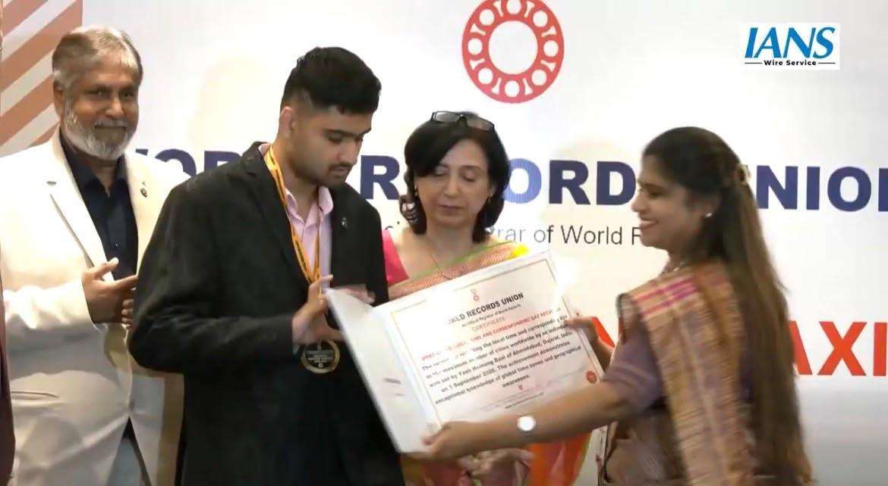
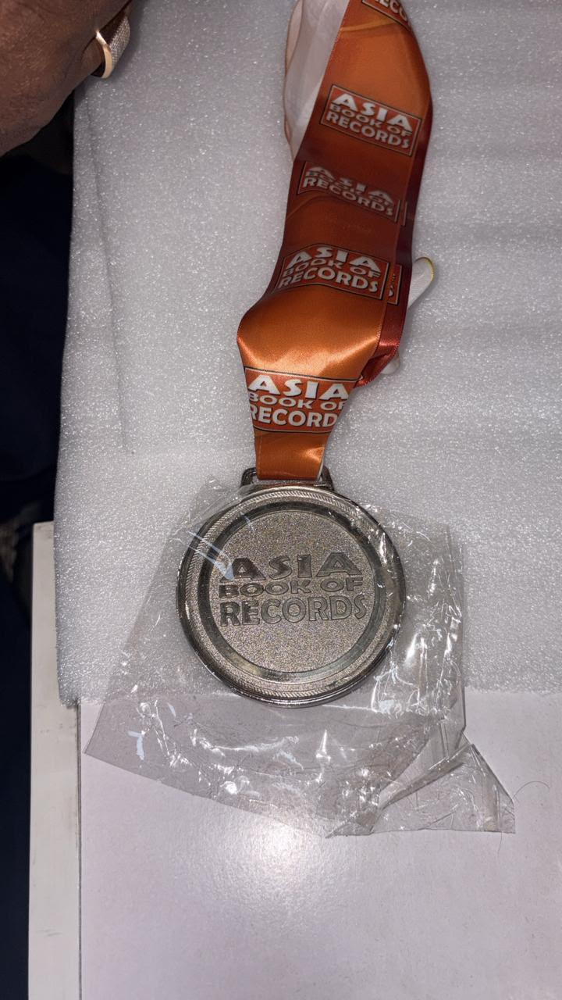
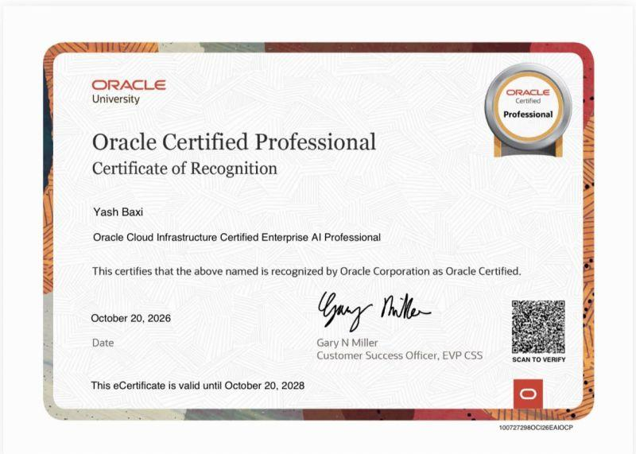
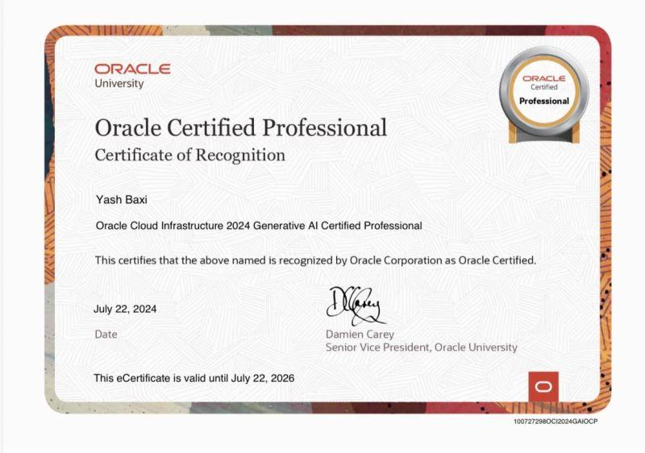

Dates & days,
in an instant.
I can remember other people's birthdays and tell the day of the week for a date in a past or future year just by knowing the date.
CURIOUS MIND · CREATIVE SPIRIT
I’m Yash Baxi — a record achiever, an AI and cloud technology learner, and a piano enthusiast. I love exploring what focused practice can make possible.

A LITTLE ABOUT ME
For me, achievement is never just about the finish line. It is about the curiosity to begin, the discipline to keep going, and the joy of discovering something new along the way.
“The most interesting things happen when you stay curious.”
A PERSONAL MOTTOA MIND THAT CONNECTS THE DOTS
From dates and world geography to music and code, I enjoy learning skills that challenge memory, logic and creativity.
I can remember other people's birthdays and tell the day of the week for a date in a past or future year just by knowing the date.
I enjoy identifying countries and recalling their capital cities.
Playing the piano is one of my favourite ways to express creativity and focus.
I practise coding and enjoy building with these languages and web technologies.
TRY A LITTLE INTERACTIVE DEMO
Try the date calculator or look up a country’s capital city.
The date calculator uses the Gregorian calendar. The capital lookup includes a selection of countries for this interactive demo.
A MEMORY FOR THE WORLD
A personal record journey built around remembering the time zones of countries around the world.
THE WORLD RECORD
Recognised for speaking the time zones of 120 countries in five minutes.
Remembered and spoke the time zones of 110 countries in 14 minutes.

A proud addition to the journey — recognised by the Asia Book of Records.
Spoke the time zones of 120 countries in five minutes.
Milestone details are presented from the uploaded record-book document.
WHEN WORDS TAKE A BACK SEAT
Beyond records and technology, piano gives me another way to focus, create, and express myself. Here’s a moment from my playing.
TECHNOLOGY & AI
A milestone in my learning journey: the Oracle Cloud Infrastructure Certified Enterprise AI Professional certification.


Earlier certificate shown in the uploaded document, dated 22 July 2024.
A VERSE THAT GUIDES ME
PSALM 23:1
“The Lord is my shepherd, I shall lack Nothing”
My faith in Christianity is an important part of who I am. This verse is a reminder of guidance, trust and hope.
THANK YOU FOR BEING HERE
Every milestone starts with a first step. This is mine — and there’s more to explore.
Back to the beginning ↑